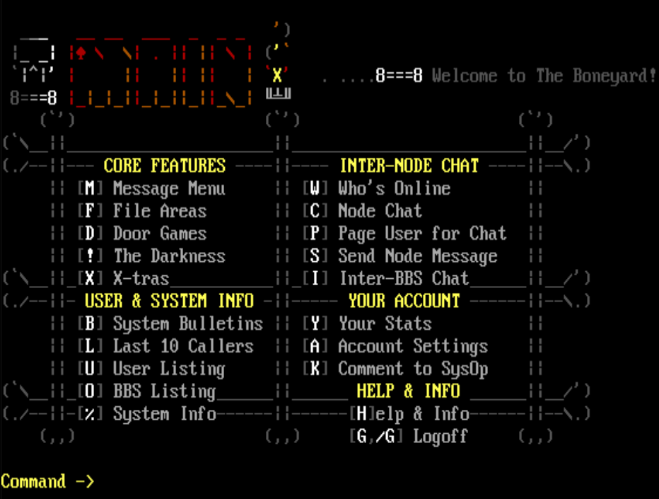
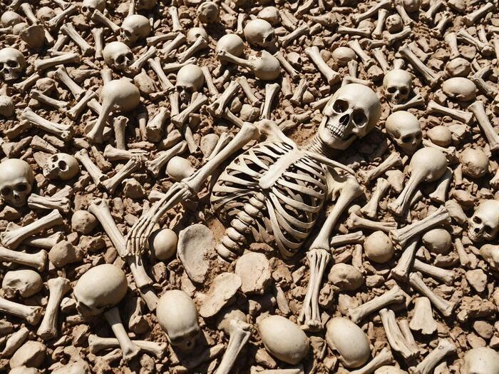

About
The Boneyard BBS

The Boneyard is my BBS that I started in 2026 as a Passion Project to get back some of the “stoke” I had as a teenager. It gives me something to build with my mind and my hands in a creative way, and along the way I get to meet interesting people, make new connections, and learn new and interesting things.
What you will find
In the message bases you’ll find quite a few eclectic topics which I chose as ones I’m interested in (it is my board after all). I would say the main draw would be the message bases, discussions around Japan, and the “dark side” of the board.
Japan

I am a student of the language and just love the rich culture and interesting topics surrounding the Japanese and their amazing country. There is a dedicated area for discussions around Japan subdivided into a variety of topics.
There are also some goodies in the File Area with books, Manga, a little guide to the language I wrote, and others.
The Dark Side
Rather than making this open to everyone, it is an optional “opt-in” on whether you want exposure to this part of the board. There are message bases, file areas, and applications dealing with things such as true crime and death.
One area in particular has Criminal Profiles which can show very explicit and graphic crime photos, so definitely not for everyone which is why it’s only for those who elect to have it.
Why “The Boneyard”?

The name kind of comprises a variety of things I think. One is, that I’ve always loved skeletons ever since I was really little (4 or 5 years old).
I also have been fascinated with death since I was very young as well and I still remember the exact point in time when I realized my own mortality and from then on it was my greatest fear in life until I got into my 50s. I was also extremely afraid of killers, serial killers in particular and wondered why they thought the way they did and how they became the way they are. There was one time when all of Southern California was living in fear of Richard Ramirez (the Night Stalker) and I actually set up a trap for him in my room to wake me up if he tried to come through my doorway (I was 11 years old).
Lastly, I love retro things such as computers and old technology. Old “electronic bones in the boneyard” so to speak. Retro electronics stores, computer museums, and the like I have a love and excitement for.